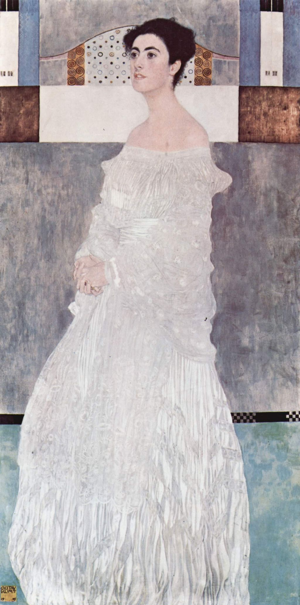

<head>
<meta charset="UTF-8" />
<meta name="keywords" content="drawing, painting" />
<meta name="description" content="drawings by Sunjy" />
<title>Sunjy</title>
<link rel="shortcut icon" type="image/x-icon" href="../../mImages/mCommon/favicon.ico" media="screen" />
<link rel="stylesheet" type="text/css" href="../../mCsses/mCommon/mCssA.css" />
<link rel="stylesheet" type="text/css" href="../../mCsses/mCommon/mCssB.css" />
<link rel="stylesheet" type="text/css" href="../../mCsses/mCommon/mCssC.css" />
<link rel="stylesheet" type="text/css" href="../../mCsses/mCommon/mCssD.css" />
<link rel="stylesheet" type="text/css" href="../../mCsses/mContent/mCssA.css" />
<link rel="stylesheet" type="text/css" href="../../mCsses/mContent/mCssB.css" />
<link rel="stylesheet" type="text/css" href="../../mCsses/mContent/mCssC.css" />
<link rel="stylesheet" type="text/css" href="../../mCsses/mContent/mCssD.css" />
</head>
<script type="text/javascript" src="../../mScripts/mContent/mContentAA.js" /></script>
<script type="text/javascript" src="../../mScripts/mContent/mContentAB.js" /></script>
<script type="text/javascript" src="../../mScripts/mContent/mContentAC.js" /></script>
<script type="text/javascript" src="../../mScripts/mContent/mContentAD.js" /></script>
<script type="text/javascript"></script> 
<script type="text/javascript">
document.write('<div class="mImgAbsolute"></div>');
/*
document.write('<p class="mFontSizeBColor" />From a white paper...</p>');
document.write('<table class="center"><tr><td>');
document.write('');
document.write('</td></tr></table>');
*/
</script>


<script type="text/javascript">
document.write('<p class="mFontSizeBColor" />Margaret Stonborough-Wittgenstein</p>');
document.write('<p class="mFontSizeSColor" />“Margaret Stonborough-Wittgenstein” by Gustav Klimt is a portrait of a woman from a prominent and wealthy Viennese family.<br><br>She was the sister of the philosopher Ludwig Wittgenstein and the pianist Paul Wittgenstein and her father was one of the richest men in the world.<br><br>This 1905 portrait was painted to commemorate her upcoming wedding. The Wittgenstein family were among Klimt’s most important patrons.<br><br>Klimt was known for his vertical paintings of women, however even though the pictures are long, the subjects in them have a particular illusionary distortion to them, as they are not precisely parallel.<br><br>In this painting, the dress dominates the picture with its delicate, lacy material. She wears a long velvet moire dress with a matching stole, whose embroidered floral ornaments provide some contrast to the iridescent robe.<br><br>Margaret almost appears two-dimensional, just like all the colorful squares around her in the painting.<br><br>Klimt, as in many of his other portraits, has used abstract, geometric designs in his art. In this portrait, abstract designs appear in the top part of the background and where the wall joins the floor.<br><br>The contrast between Margaret and geometric patterns dominates the entire picture, whose architectural elements accentuate the planar background.<br><br>The portrait did not do justice to the independent and intellectual personality of the subject, because Margaret did not like the picture and banished it to the attic of her summer house. Margaret (1882 – 1958) was born and died in Vienna.<br><br>She married Jerome Stonborough, a wealthy American, in 1904, divorced in 1923. After the First world war, she was appointed as a special representative of the American Relief Program for Austria.<br><br>When working in juvenile prisons as a psychotherapy adviser, she came into contact with Sigmund Freud and was analyzed by him for over two years. They remained in contact until Freud’s death.<br><br>In 1940, Margaret emigrated to the US, because of World War II. She returned to Austria after the war and obtained restitution of part of her wealth, which had been confiscated by the Nazis.<br><br>Wittgenstein Family<br><br>Karl Wittgenstein (1847 – 1913) was a German-born Austrian steel tycoon of Jewish origin. By the end of the 19th century, he controlled an effective monopoly on steel and iron resources within the Austro-Hungarian Empire.<br><br>By the 1890s, he had acquired one of the largest fortunes in the world. He was the father of concert pianist Paul Wittgenstein, philosopher Ludwig Wittgenstein and philanthropist Margaret Stonborough-Wittgenstein and three of his other children died from suicide.<br></p>');
document.write('<table class="center" /><tr><td>');
document.write('<br>She was the sister of the philosopher Ludwig Wittgenstein and the pianist Paul Wittgenstein and her father was one of the richest men in the world.<br><br>This 1905 portrait was painted to commemorate her upcoming wedding. The Wittgenstein family were among Klimt’s most important patrons.<br><br>Klimt was known for his vertical paintings of women, however even though the pictures are long, the subjects in them have a particular illusionary distortion to them, as they are not precisely parallel.<br><br>In this painting, the dress dominates the picture with its delicate, lacy material. She wears a long velvet moire dress with a matching stole, whose embroidered floral ornaments provide some contrast to the iridescent robe.<br><br>Margaret almost appears two-dimensional, just like all the colorful squares around her in the painting.<br><br>Klimt, as in many of his other portraits, has used abstract, geometric designs in his art. In this portrait, abstract designs appear in the top part of the background and where the wall joins the floor.<br><br>The contrast between Margaret and geometric patterns dominates the entire picture, whose architectural elements accentuate the planar background.<br><br>The portrait did not do justice to the independent and intellectual personality of the subject, because Margaret did not like the picture and banished it to the attic of her summer house. Margaret (1882 – 1958) was born and died in Vienna.<br><br>She married Jerome Stonborough, a wealthy American, in 1904, divorced in 1923. After the First world war, she was appointed as a special representative of the American Relief Program for Austria.<br><br>When working in juvenile prisons as a psychotherapy adviser, she came into contact with Sigmund Freud and was analyzed by him for over two years. They remained in contact until Freud’s death.<br><br>In 1940, Margaret emigrated to the US, because of World War II. She returned to Austria after the war and obtained restitution of part of her wealth, which had been confiscated by the Nazis.<br><br>Wittgenstein Family<br><br>Karl Wittgenstein (1847 – 1913) was a German-born Austrian steel tycoon of Jewish origin. By the end of the 19th century, he controlled an effective monopoly on steel and iron resources within the Austro-Hungarian Empire.<br><br>By the 1890s, he had acquired one of the largest fortunes in the world. He was the father of concert pianist Paul Wittgenstein, philosopher Ludwig Wittgenstein and philanthropist Margaret Stonborough-Wittgenstein and three of his other children died from suicide.<br>" />');
document.write('</td></tr></table>');
</script>


